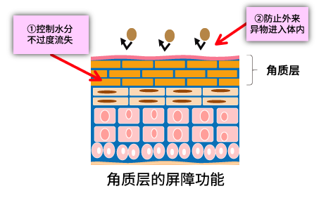
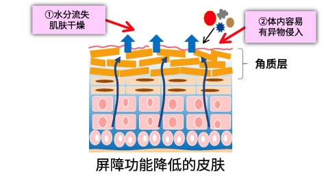

对皮肤的屏障功能起促进作用
什么是皮肤的屏障功能？
覆盖皮肤最外侧的角质层，其厚度仅仅只有0.02mm，但它却承担着皮肤“屏障功能”这一重要的作用。
皮肤的屏障功能如果降低，内侧的水分就容易丢失，导致皮肤出现干燥，呈现一种所谓“干燥皮肤”的症状，同时，异物也容易侵入体内，这一点人们都可以理解。

图片绘出了皮肤最外侧的“角质层”部分。
角质层承担着“屏障功能”的重要作用。其屏障功能有以下两种：①控制和避免皮肤水分丢失过多；②防止外部异物进入体内。

皮肤的屏障功能降低时，不仅可观察到水分因蒸发而丢失造成的干燥，而且异物容易侵入体内。
含有胶原蛋白肽和牛奶神经酰胺的酸奶能促进皮肤的屏障功能
自觉干燥皮肤的女性经4周摄取含有胶原蛋白肽和牛奶神经酰胺的酸奶后，结果表明脸颊的水分蒸发量（经表皮的水分蒸发量）出现下降。实验食品的摄取促进了皮肤的屏障功能作用，显示出改善干燥皮肤症状的可能性。

根据Aesthetic dermatology
Vol.26:48-56, 2016作图
经表皮的水分蒸发量（脸颊）变化
通过4周摄取含有胶原蛋白肽和牛奶神经酰胺的酸奶，与摄取前相比经表皮的水分蒸发量明显下降。 |
※经表皮的水分蒸发量：从体内通过角质层蒸发（丢失）的水分量。数值越小，皮肤的屏障功能越强。
| 对象 |
20岁以上未满50岁的女性39名
(1)在两前臂部位的任一方或脸颊部显示干皮病者
(2)最近2周的排便次数为每周2次以上4次以下者 |
| 实验食品 |
将源自鱼原料的胶原蛋白肽1,000mg、和牛奶神经酰胺（作为鞘磷脂10mg） 混合制成的LB81乳酸菌酸奶 75 g |
| 实验设计 |
摄取前后比较实验（4周内每天摄取实验食品，作前后比较） |
| 实验期 |
2015年1月～2015年2月 |